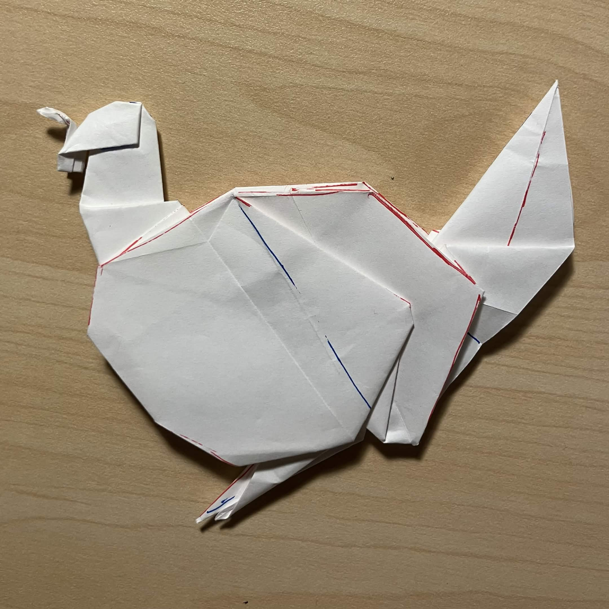

Here it is folded irl
Cormorant
I finally started trying to design origami. This is my first design, made by modifying traditional bases.
It's a mix of a bird base and a frog base, with a sink in the center. Crease pattern and folded base
(without the sink) made on Oriedita
If I were to do it again, I would want a different way to sink the center, since it is a little awkward
- but it's the most important part for the structure.
Full instructions probably never getting made :( but it is quite replicable by the images



The same base can be used to make a turkey